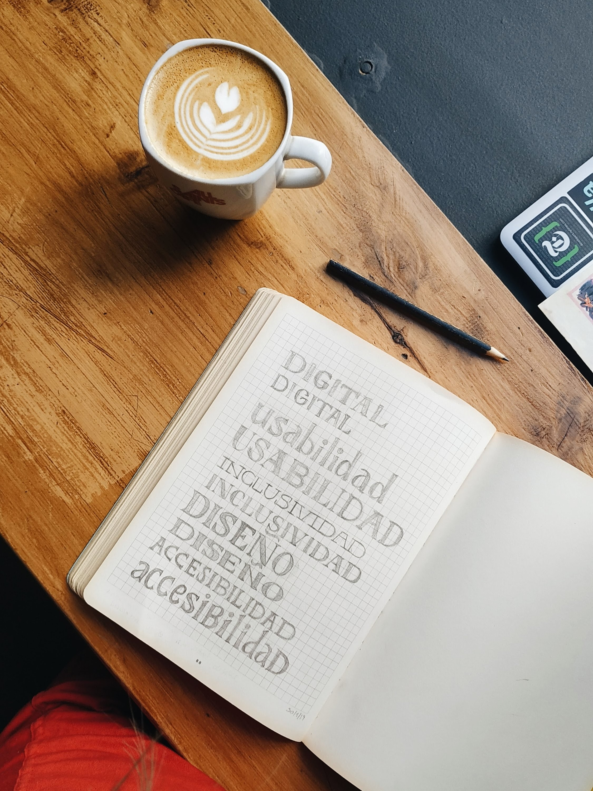

Aquí, en está pagina se encuentra la experiencia que tengo en mi vida, en distintos campos como academicamente o laboralmente.
He trabajado diseñando y estructurando paginas web, con diseños exclusivos y dinámicos, contando con una estructura responsive, y además con funcionalidades como la CRUD, enlazada a bases de datos.
